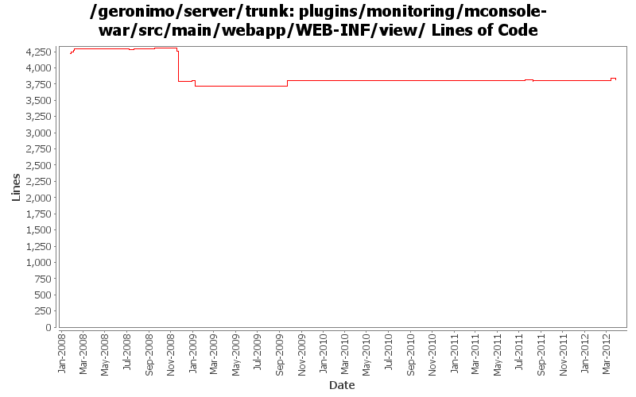

[root]/plugins/monitoring/mconsole-war/src/main/webapp/WEB-INF/view

| Author | Changes | Lines of Code | Lines per Change |
|---|---|---|---|
| Totals | 150 (100.0%) | 1771 (100.0%) | 11.8 |
| djencks | 24 (16.0%) | 766 (43.3%) | 31.9 |
| dwoods | 54 (36.0%) | 595 (33.6%) | 11.0 |
| genspring | 16 (10.7%) | 137 (7.7%) | 8.5 |
| ecraig | 42 (28.0%) | 131 (7.4%) | 3.1 |
| xiaming | 2 (1.3%) | 54 (3.0%) | 27.0 |
| rwonly | 5 (3.3%) | 47 (2.7%) | 9.4 |
| yunfengma | 1 (0.7%) | 20 (1.1%) | 20.0 |
| xuhaihong | 1 (0.7%) | 14 (0.8%) | 14.0 |
| jbohn | 4 (2.7%) | 6 (0.3%) | 1.5 |
| kevan | 1 (0.7%) | 1 (0.1%) | 1.0 |
GERONIMO-6135 revised patch for monitor portlet refresh issue, for trunk
18 lines of code changed in 1 file:
GERONIMO-6135 Add javascript to auto reload the page after 1 second, provided by xie zhi, for trunk
36 lines of code changed in 1 file:
GERONIMO-6076 Graphics cannot be displayed on monitoring porlet (Thanks fang shenghao for the patch!)
16 lines of code changed in 1 file:
GERONIMO-6095 Info displayed incomplete of Default Server in Monitoring on admin console (thanks Fang shenghao for the patch!)
15 lines of code changed in 2 files:
GERONIMO-6076 Graphics cannot be displayed on monitoring porlet. Patch from Yi Xiao.
8 lines of code changed in 1 file:
GERONIMO-4810 Predefine a "localhost" server with some predefined graphs and views (Patch from Vanessa)
14 lines of code changed in 1 file:
GERONIMO-4823 role-based administration capabilities
76 lines of code changed in 6 files:
GERONIMO-4863 no other graphs can be chosen when I click "Modify this view" of a view (patch from Siqi Du)
10 lines of code changed in 1 file:
GERONIMO-4875 "edit" button shows in "Created time" column in monitoring portlet. (patch from Siqi Du)
6 lines of code changed in 1 file:
GERONIMO-4849 Such warning will be shown after deleted a remote monitoring server via JMX, Thanks Siqi for the patch !
18 lines of code changed in 6 files:
GERONIMO-4883 ship agent-car-jmx and make it default agent, mark ejb agent as "load=false".
35 lines of code changed in 3 files:
GERONIMO-4597 Validate Web Admin Console input - fixes for CVE-2008-5518, CVE-2009-0038, and CVE-2009-0039
6 lines of code changed in 4 files:
GERONIMO-4474 Pull out the text in the JSP files to resource bundle files. Applied jsp-localization-fix.patch from Gang Yin.
2 lines of code changed in 2 files:
GERONIMO-4484 Extraction, localization and display of messages generated in portlets. Applied common-message-monotor.patch from Gang Yin.
56 lines of code changed in 12 files:
GERONIMO-4474 Additional localization patches from Gang Yin.
6 lines of code changed in 4 files:
GERONIMO-4474 Pull out the text in the JSP files to resource bundle files. Patches provided by Gang Yin.
354 lines of code changed in 16 files:
GERONIMO-4415 use jpa for data access in monitoring console
743 lines of code changed in 12 files:
GERONIMO-4415 start of code cleanup and use of jpa in console. Also add a server assembly for testing
23 lines of code changed in 12 files:
GERONIMO-4081 Accessibility issue: Webking scan errors against 'Check Web Accessibility(Section 508)'
145 lines of code changed in 12 files:
GERONIMO-4245 - Required changes for new Spec compliant Tomcat Jasper
2 lines of code changed in 2 files:
GERONIMO-4245 Upgrade to private build of Tomcat 6.0.18 with our Geronimo required patches integrated for catalina.jar and jasper.jar. Also some JSP updates were required to handle a Jasper change introduced in Tomcat 6.0.17.
9 lines of code changed in 5 files:
G4188 -- View Server portlet runs in unhandled exception if the statistics bean is not available
20 lines of code changed in 1 file:
GERONIMO-4025 Accessibility issues. Applied GERONIMO-4025-activemq-and-monitoring.patch from Rex.
21 lines of code changed in 1 file:
GERONIMO-3937
java.lang.ArithmeticException: / by zero
Modified console to prevent passing of 0 in request
2 lines of code changed in 2 files:
GERONIMO-3633
Monitoring client should auto redraw graphs/the page on any page that has graphs
GERONIMO-3818
Monitoring console should open individual graphs in actual new window rather than tabs in firefox
GERONIMO-3817
mconsole should display axis labels
15 lines of code changed in 8 files:
GERONIMO-3810
Changed monitoring agent-jmx and mconsole such that while the thread shutdown is pending, the user is aware of it
61 lines of code changed in 3 files:
GERONIMO-3804
monitoring pluging: mconsole-graphs does not detect any servers that was connected through jmx
1 lines of code changed in 1 file:
GERONIMO-1761 move geronimo-util to geronimo-crypto. Still pending mv of one test directory that svn wouldn't let me move
1 lines of code changed in 1 file:
Changing Dojo 1.0.x to default /dojo
Moved context root of Dojo 0.4.3 to /dojo/0.4
Changed references in dependent plugins so they access proper versions correctly
1 lines of code changed in 1 file:
GERONIMO-3730
monitoring plugin to support jmx connections in mconsole
Added base methods and such for JMX connections from client side
EJB still works flawlessly after these changes, some quirks with JMX still to be hammered out
45 lines of code changed in 7 files:
GERONIMO-3730
monitoring plugin to support jmx connections in mconsole
Implemented UI elements to select connection method
Renamed current mrcconnector class to mrcconnectorejb, in order to add mrcconnectorjmx
added protocol field to database schema
added checks for connection type in monitoring portlet
6 lines of code changed in 12 files:
Monitoring Plugin-
Recursively converted all windows encoded files to unix encoding.
0 lines of code changed in 6 files:
Monitoring console: Cleaned up appearance of header bar above graphs so that they match the width of the graph and are of uniform height
0 lines of code changed in 2 files: